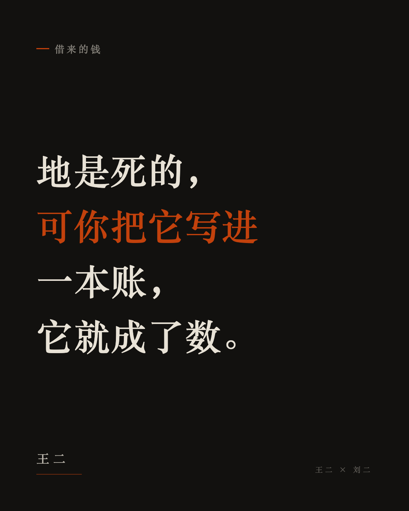

王二
痞气 · 反讽 · 冷幽默 · 自嘲
设备科那本账，最后那台龙门刨报废的时候，账上还剩三块六。机器的底座让吊车吊走，卖废铁卖了四百二。账上那三块六没人去划，就搁着。翻账本翻到那一页，还看得见。
我在厂里待过几年，设备科那间屋子我去得多。一张三屉桌，桌上摆着账本，牛皮纸封面，拿麻绳穿着。一台机器进厂，先记一笔原价；往后每年抹一点，叫折旧，抹到第十年就剩个零头；中间大修一回，再记一笔。机器越用越旧，账上的数越抹越小。可你到车间去看，那机器还在转，皮带轮呼呼的，油泥糊了半寸厚。
账是账，机器是机器。这两样对不上，设备科的人心里都有数，谁也不说破。
我那会儿在车间干活，手上全是油。看他们翻账本，心里还犯嘀咕：这机器明明好好的，账上怎么一年比一年少。后来才明白，账是给上头看的，机器是给车间用的，两下里不搭界。
头一回听说拿地这么办，是在报上看的。
上海浦东，九十年代初。手里没现钱，有的是地。地想变成钱，得卖；可一时卖不掉，也卖不上价。于是换了个法子：划出一片地，不算卖，折成几家公司的本钱。公司账上有了这一笔，就拿着去跟银行谈。银行看账，账上有数，肯借。借来的钱不急着花，先存回去，银行看存款又添了一层，肯借得更多。一圈转下来，本钱不到一个亿，办出来的事有几十个亿。
我得停一下，把这话说白。地是死的，搁在那儿，不能吃不能穿，也不生崽。可你把它写进一本账，它就成了数。成了数还不算完，它还能当引子，引出比它多几十倍的真钱来。
这跟乡下借粮是一个理，只是掉了个个儿。
我们插队那会儿，春天青黄不接，跟队里借粮。借一百斤玉米，秋天还一百二十斤。借的时候粮是实的，一麻袋一麻袋扛回窑里；还的时候得等庄稼下来。年景好，还上；年景不好，就再跟另一家借，或者先把明年的口粮支出来。队里会计把这些记在一张发黄的纸上，谁家欠多少，一笔一笔。纸上的数一年比一年多，仓里的粮不一定。
工分也是这么回事。一年记下来，工分记了十万。秋后一算，仓里就三千斤。十分工折几两粮，得看打下来多少。工分好记，粮不好变。
重庆那边是后来才知道的。本世纪初，这套办法往西挪了挪。先去收拾烂尾楼——盖了一半撂在那儿的楼，钢筋露在外头，锈成红褐色，野草从二楼长出来；再接手一座有争议的桥，谁都躲着走的。这么一收拾，市里那几家公司手上的东西一点点多起来。东西多了，账上的数就大；数大了，银行肯借的就多。市里能动的钱跟着往上走。后来索性凑了八家，专管这一摊。
再往后，这办法就散了。各个城市都学。圈一片地，折成数，换成钱，修路，盖楼，建新城。
有一年我回过插队那个县。县城边上起了个新城，路修得笔直，路灯一溜排开，大白天也亮着。楼都起来了，窗户黑洞洞的，没住人。我问街边卖凉粉的：这楼谁买？他说：先盖着，往后总有人来。我买了碗凉粉，蹲在路边吃，抬头看那排亮着的路灯。
钱从哪儿来，账上写得明白：不是这一辈人挣出来的，是先借的。拿明天的进项，办今天的事。修的路是真的，盖的楼是真的，新城也是真的，这些都不假。假的是那个“明天的进项”——它还没到。
账总得还。还账的钱从哪儿来？卖地。地价往上走，卖一块还一块；地价不往上走了，就把下一块押出去，再借一笔。这跟我当年借粮还粮、还不上再借，是一家子的法子。区别是我借一百斤，最多滚到二百斤，人就扛不动了。
我造过一台机器。木头架子，前头装了架风速仪，底下用水泥打了地基。打地基的时候把家里两扇门板拆了，窗框也拆了。我爹不心疼门板，心疼他那几本书。机器砸下去，落点准，砸得深。可你要问我这机器值多少钱，我说不上来。它没进过账，也没人给它记过折旧。水泥地基打在地里，拆不走，就搁那儿了。
后来那地方盖了房，地基还在地底下。谁也没算过它值几个钱。
· · ·
刘二
缓慢 · 万物有灵 · 时间回折 · 静
我爷说过一句话，地是死的。人不在了，地还在。今年种它，它长；明年不种，它长草。它不会自己走到别处去，也不会自己多长出一亩来。它就那么躺着，等谁去动它。等不到，就荒着。
现在听说，地能折成钱了。
地没挪窝，还在一处躺着，可它换了个说法。它不再说“我今年能长多少麦子”，它开始说“我值多少钱”。这么一说，它就真成了一笔钱。这笔钱搁进去，还能再借出来好几笔钱。好比春天你手里攥着一斗种子，人家看你有这一斗压着，就肯借给你三斗。种子还是那一斗，借来的三斗是另外的。地还是那一块，借来的钱是另外的。
这套办法头一回是在东边靠海的一个地方使出来的。那会儿手里没现钱，就把成片的地划给几家公司，把地算成公司的本钱；公司拿这个本钱出去借，借来的钱再存进银行，银行见账上有钱，就肯再借出几倍来。这么一转，一斗变三斗，三斗变一囤。后来有人把这套搬到江边一座城，先收拾烂尾的楼，接手几处争不清的桥，把几家公司养肥了，再往里头填地、填房子，撑起个模样，然后拿这个模样去大笔大笔地借。再后来，各处都学会了，一城一城地学，学得都挺像。
我不懂这些，我只认得村里借粮的规矩。春天借一斗，秋后还一斗半。借的时候，人家把斗口抹得平平的，一粒不多给；还的时候，你得堆出个尖儿来，堆得实实的。谁家借的，本子上记着，一行一行，跑不了。这规矩老得很，可它清楚：借的，是要还的，还的比借的多。
把地折成钱，比借粮绕。借粮好歹有一斗实实在在的粮食搁在眼前，看得见，秤得着。地折成钱，折出来的不是粮，是个数。这个数写在纸上。你拿这张纸出去，人家认，就能换成真的东西——换成路，换成楼，换成一片新起的城。可你手里那口缸还是那口缸，缸里的水是喝的，纸上那个“多少桶水”的数，是借的。喝缸里的水，缸还在；花纸上那个数，花完了，得还。
我还想起村口铺子里那个红皮本子。谁赊了半斤盐、二两油，记一行。赊的时候痛快，拿了就走，不用掏钱。到了年根底下，本子翻开，一行一行念，念到谁，谁脸上挂不住。赊账这事不难，难的是年根底下那一念。
钱花出去了。路修得宽，车跑得欢；楼盖得高，灯亮到半夜；新城一片一片起来，比老村子气派多了。这些都是实的，看得见摸得着。可办这些事的钱，不是这一辈人一锄一锄挣出来的，是先从往后借来的。借的是“往后”——往后那些还没长出来的麦子，往后那些还没长大的孩子要念的书，往后那些还没走出去的人在城里要挣的工钱。把往后的收成，先挪到今天花了。
地是不能花的。你花它，花的是它往后能长出来的东西。地一辈子的收成，叫人提前押上了。地不言语，它还是那么躺着，可它往后的日子，已经被人替它许出去了。
账总得有个落脚的地方。借粮的账落在借粮人身上，赊油的账落在赊油人身上。这笔账落在谁身上呢？落在往后。往后的日子长，账也跟着长。今天走在这条路上的人，路是修好了，可修路的钱还没还利索。往后再走这条路的人，兴许还得接着还。他们不知道，也不问，只管走。路不问钱是从哪来的，路只管让人走。
我爷那辈人攒钱，是把钱压在缸底下，一毛一毛攒，攒够了才花。他们说，花没到手的钱，夜里睡不踏实。现在的人不这么想，现在的人说，先把事办了，钱慢慢还。这话也不是没道理——路修早了，车就早跑几年；楼盖早了，人就早住几年。可这里头有个东西，我总觉着不对劲：地是死的，它不会跑，可账是活的，它会跑，会往以后跑，跑到你不认得它的地方去。
我蹲在地头想过一阵。今年的麦子还没下种，地先被人说成了一个数。这个数在外头转了一大圈，转回来，变成一条路、一片楼，压在这块地上头。地还认不认得自己？它兴许不认了。它只认一件事：今年下没下种，下了几场雨，收了几成。
楼下头还是那块地。地不管上头压着什么，它只认今年下没下种。
· · ·